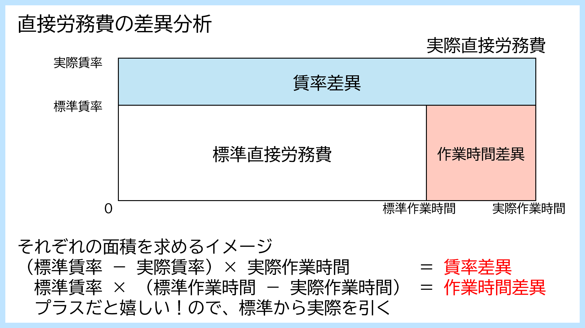
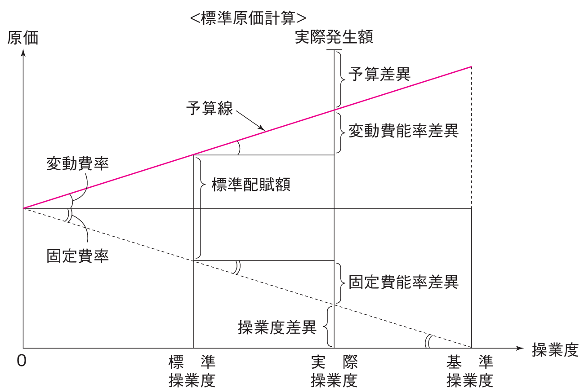
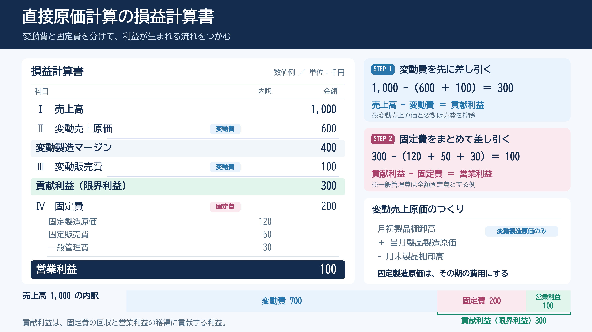

解答するときの注意
金額は3桁ごとにカンマで区切ります。製造原価報告書・損益計算書・原価計算表・勘定に記入する金額は、数値のみを記入します（「円」や「¥」は付けません）。差異の有利・不利、勘定の貸借は解答欄の指示に従ってください。
総合原価計算では「素材は始点投入・加工費は進捗度に応じて」が基本です。月初・月末仕掛品の加工換算量、先入先出法と平均法の違い、正常減損の負担先を資料で確認してから計算します。予定配賦・予定消費の問題は、予定額と実際額の差を差異勘定に振り替える流れを押さえましょう。
解説の凡例
すべての問題で、次の表示を共通して使用します。
各設問の問題文・資料を示します。
同じ論点の問題に共通して使える手順・算式です。
この問題の数値を当てはめ、途中計算・勘定記入・仕訳を省略せず示します。
換算量、配賦基準、差異の有利・不利、勘定科目の選択などの失点しやすい箇所です。
公式の解答に基づく最終的な解答です。
出典：公益財団法人 全国商業高等学校協会主催 令和8年度 第102回 簿記実務検定試験 第1級 原価計算（令和8年6月28日実施）
問題・解答用紙PDF 解答PDF（会計・原価計算 共通）本記事は全商協会による公式解説ではありません。
PDF版のダウンロードはこちら
学校の授業で使用するなど、紙媒体での解説が必要な方は、こちらをお使いください。
設問一覧
解説内で使用する略語について
| P/L | 損益計算書 |
| B/S | 貸借対照表 |
| CVP | Cost-Volume-Profit（損益分岐点分析・利益計画） |
| FIFO | First-In, First-Out（先入先出法） |
設問別解説
第１問
問題文・資料を確認する（クリックで開閉）
⑴ 福島製作所における当期（令和○年1月1日から令和○年12月31日まで）の勘定記録・製造原価報告書・損益計算書（一部）・貸借対照表（一部）により，（ア）から（ウ）に入る金額を求めなさい。ただし，会計期間は原価計算期間と一致しているものとする。
仕掛品 前期繰越 360,000 製品 （ ） 素材 2,044,000 次期繰越 432,000 賃金 2,725,000 外注加工賃 324,000 製造間接費 （ ） （ ） （ ）
製造間接費 工場消耗品 160,000 仕掛品 （ ） 賃金 417,000 給料 480,000 健康保険料 60,000 減価償却費 （ア） 電力料 516,000 雑費 107,000 （ ） （ ）
製品 前期繰越 （ ） 売上原価 （ ） 仕掛品 （ ） 次期繰越 （ ） 7,570,000 7,570,000
製造原価報告書（令和○年1月1日〜12月31日） 金額 Ⅰ 材料費 （ ） Ⅱ 労務費 （ ） Ⅲ 経費 1,097,000 当期製造費用 （ ） 期首仕掛品棚卸高 360,000 合計 （ ） 期末仕掛品棚卸高 （ ） 当期製品製造原価 （イ） 損益計算書（一部）：Ⅰ 売上高 8,800,000 Ⅱ 売上原価（ ） 売上総利益（ウ）
貸借対照表（一部・令和○年12月31日）：製品 750,000 仕掛品（ ）
一般的な解法
原価の流れと勘定残高の逆算
- 製造原価報告書＝材料費・労務費・経費の当期製造費用＋期首仕掛品－期末仕掛品。
- 製品勘定は期首製品＋完成品原価＝売上原価＋期末製品という貸借の関係で確認する。
- 求められている金額のうち、先に分かる金額から埋めて逆算する。
製造原価報告書にある経費の金額と、仕掛品及び製造間接費の内訳から減価償却費を求めます。
直接経費にあたるのは、「外注加工賃」
間接経費にあたるのは、「減価償却費」「電力料」「雑費」です。
これらの合計金額が製造原価報告書の「経費」の金額になります。
減価償却費：1,097,000 − 324,000 − 516,000 − 107,000 ＝ 150,000
製造原価報告書を埋めていきます。
材料費に当たるのは、「素材」「工場消耗品」です。
労務費に当たるのは、「(直接／間接)賃金」「給料」「健康保険料」です。
期末仕掛品棚卸高は、仕掛品勘定の「次期繰越」となっている金額です。
労務費：2,725,000 ＋ 417,000 ＋ 480,000 ＋ 60,000 ＝ 3,682,000
当期製造費用：2,204,000 ＋ 3,682,000 ＋ 1,097,000 ＝ 6,983,000
当期製品製造原価：6,983,000 ＋ 360,000 − 432,000 ＝ 6,911,000
製品勘定の貸方に着目し、合計7,570,000からB/S期末製品750,000を差し引けば売上原価が分かります。
売上総利益：8,800,000 − 6,820,000 ＝ 1,980,000
問題文・資料を確認する（クリックで開閉）
⑵ 標準原価計算を採用している千葉製作所の当月における下記の資料から，次の金額を求めなさい。ａ．完成品の標準原価 ｂ．作業時間差異 ｃ．予算差異 ただし，ⅰ 直接材料は製造着手のときにすべて投入されるものとする。ⅱ 解答欄の（ ）のなかに不利差異の場合は（不利），有利差異の場合は（有利）と記入すること。
標準原価カード（ＡＴ製品） 標準単価 標準消費数量 金額 直接材料費 ¥500 5kg ¥2,500 直接労務費 ¥1,200 2時間 ¥2,400 製造間接費 ¥1,600 2時間 ¥3,200 製品1個あたりの標準原価 ¥8,100 ② 生産データ：月初仕掛品 400個（加工進捗度30％） 当月投入 1,900個 合計 2,300個 月末仕掛品 300個（加工進捗度50％） 完成品 2,000個
③ 実際直接材料費 ¥4,992,000（実際単価 ¥520） ④ 実際直接労務費 ¥4,960,000（実際直接作業時間 4,000時間） ⑤ 実際製造間接費 ¥6,720,000 ⑥ 製造間接費予算額（固定予算）¥6,640,000 基準操業度（直接作業時間）4,150時間
一般的な解法
標準作業時間と固定予算の比較
- 完成品標準原価＝完成品数量×単位当たり標準原価。
- 標準作業時間は完成品数量だけでなく、月初・月末仕掛品の加工進捗度を反映した当月投入換算量から求める。
- 差異分析は以下の画像参照


製品1個の標準原価は標準原価カードから8,100です。
標準作業時間 ＝ 当月加工分完成品換算量 × 製品１個当たりの標準作業時間
当月に加工した分は、完成品数量から月初仕掛品の完成品換算量を差し引き、月末仕掛品の完成品換算量を足して求まります。
標準直接作業時間：2,030 × 2時間 ＝ 4,060時間
作業時間差異：（4,060 − 4,000）× 1,200 ＝ 72,000（有利）
固定予算では予算額と実際発生額を直接比較します。
問題文・資料を確認する（クリックで開閉）
⑶ 等級別総合原価計算を採用している山形工業株式会社は，1級製品・2級製品・3級製品を製造している。次の資料によって，2級製品の製品単価を求めなさい。ただし，等価係数は，各製品の1個あたりの重量を基準としている。
① 当月完成品総合原価 ¥7,068,000 ② 製品1個あたりの重量 1級製品 520g 2級製品 260g 3級製品 130g ③ 完成品数量 1級製品 1,200個 2級製品 1,800個 3級製品 3,000個
一般的な解法
重量による等価係数・積数配賦
- 重量の比から等価係数を求め、各等級の完成品数量に掛けて積数を計算する。
- 総合原価×対象等級の積数÷全積数＝対象等級の原価。これを完成数量で割れば製品単価。
重量比520：260：130＝4：2：1を等価係数とします。
積数合計：4,800 ＋ 3,600 ＋ 3,000 ＝ 11,400
2級完成品原価：7,068,000 × 3,600 ÷ 11,400 ＝ 2,232,000
◆製品単価：2,232,000 ÷ 1,800個 ＝ 1,240
問題文・資料を確認する（クリックで開閉）
⑷ 単純総合原価計算を採用している埼玉製作所の次の資料から，月末仕掛品原価を求めなさい。ただし，ⅰ 素材は製造着手のときにすべて投入され，加工費は製造の進行に応じて消費されるものとする。ⅱ 月末仕掛品原価の計算は平均法による。ⅲ 正常減損は製造工程の終点で発生しており，正常減損費は完成品のみに負担させる。
① 生産データ：月初仕掛品 250kg（加工進捗度40％） 当月投入 4,950kg 合計 5,200kg 月末仕掛品 300kg（加工進捗度60％） 正常減損 100kg 完成品 4,800kg
② 月初仕掛品原価：素材費 ¥195,000 加工費 ¥145,000 ③ 当月製造費用：素材費 ¥3,985,800 加工費 ¥7,475,000
一般的な解法
正常減損を完成品のみに負担させる計算
- 平均法では月初仕掛品原価と当月製造費用を合わせて単価を計算する。
- 正常減損が終点で発生し完成品のみ負担の場合、正常減損数量を完成品換算量の分母に含め、月末仕掛品には減損費を負担させない。
素材は始点投入で月末300kg全部、加工費は進捗度60％で180kg相当です。
月末素材費：804 × 300 ＝ 241,200
加工費単価：（145,000 ＋ 7,475,000）÷（4,800 ＋ 100 ＋ 300 × 60％）＝ 1,500
月末加工費：1,500 × 180 ＝ 270,000
◆月末仕掛品原価：241,200 ＋ 270,000 ＝ 511,200
問題文・資料を確認する（クリックで開閉）
⑸ 次の文の［ ］にあてはまるもっとも適当な語を，下記の語群のなかから選び，その番号を記入しなさい。
製品の製造に要する原価を製造原価といい，これに［ア］を加えたものを総原価という。なお，製品の製造・製品の販売・企業全般の管理に関係しない費用は，原価に含めない。このような費用のことを［イ］といい，支払利息や災害損失などがある。
1．非原価項目 2．原価項目 3．製造間接費 4．販売費及び一般管理費
一般的な解法
総原価と非原価項目
- 製造原価に販売費及び一般管理費を加えたものが総原価。
- 企業活動で発生しても、製造・販売・一般管理と関係のない支払利息や災害損失などは非原価項目とする。
総原価は製造原価に販売費及び一般管理費を加えた金額です。
支払利息や災害損失は製造・販売・一般管理の原価に含めません。
問題文・資料を確認する（クリックで開閉）
⑹ 群馬製作所の当月における次の資料をもとにおこなわれた，下記のある高校の授業における会話文を読み，［ ］のなかに入る金額または数量を記入しなさい。ただし，月初・月末の仕掛品はなかった。
全部原価計算による損益計算書（群馬製作所） 金額 Ⅰ 売上高 1,500,000 Ⅱ 売上原価 1,050,000 売上総利益 450,000 Ⅲ 販売費及び一般管理費 360,000 営業利益 90,000 ② 製品の販売データ：月初製品棚卸数量 0個 当月完成品数量 300個 月末製品棚卸数量 0個 当月販売数量 300個 ③ 固定製造間接費 ¥210,000 ④ 固定販売費及び一般管理費 ¥240,000 ⑤ 貢献利益率 36％
先生：前回の授業で説明した全部原価計算と直接原価計算の関係性については，理解できましたか。それでは，資料の数値を用いて，一緒に確認してみましょう。当月の販売単価はいくらでしょうか。
生徒Ａ：はい，売上高と当月販売数量を用いると（ ）円だと分かります。
先生：そのとおりです。次に，資料をもとに，製造・販売数量が300個だった場合の直接原価計算による損益計算書を作成してみましょう。損益計算書に記入する変動売上原価と変動販売費はいくらですか。
生徒Ｂ：はい，変動売上原価は840,000円，変動販売費は［ア］円です。
先生：正解です。素晴らしいですね。それでは，このときの営業利益はいくらですか。
生徒Ａ：営業利益は，（ ）円です。
先生：そのとおりです。それでは，作成した直接原価計算による損益計算書を用いて，CVP分析をしてみましょう。損益分岐点における売上高を求めてください。
生徒Ｂ：はい，損益分岐点における売上高は［イ］円です。
先生：正解です。損益分岐点というのは，営業利益が零（0）になる点のことでした。つまり，群馬製作所では，売上高が［イ］円より多くなれば，営業利益がプラスになるということです。
生徒Ａ：それでは，その金額よりも少ない売上高になると損をしてしまうということですか。
先生：そのとおりです。利益をあげるには，損益分岐点における売上高より多くの売上高が必要であることがわかりましたね。それでは，販売単価を変えずに次月の目標営業利益を当月の営業利益の2倍とする場合は，いくら販売すればよいか，計算できますか。
生徒Ｂ：はい，目標営業利益180,000円を達成するための売上高は，（ ）円です。
先生：そのとおりです。それでは，最後に，この目標営業利益180,000円を達成し，かつ当月の販売単価を維持する場合，当月販売数量300個と比べ，何個多く販売する必要がありますか。
生徒Ｂ：はい，［ウ］個多く販売する必要があることがわかります。
先生：正解です。みなさん，よく理解していますね。
一般的な解法
全部原価計算との違いと損益分岐点
- 直接原価計算では変動費・固定費を分け、売上高－変動費＝貢献利益を計算する。
- 損益分岐点売上高＝固定費÷貢献利益率。目標売上高＝（固定費＋目標営業利益）÷貢献利益率。
- 販売数量を求める場合は、目標売上高÷販売単価。現在の販売数量との差を答えるときは差し引く。

販売費及び一般管理費の総額から固定部分を控除します。
一般管理費は基本的に固定費ですから、販売費及び一般管理費から固定費を控除すると変動販売費のみ残ります。
損益分岐点売上高というのは営業利益が0になる売上高です。
変動することのない固定費を軸として、この金額と貢献利益がぴったりになるような売上高を求めればよいということです。
固定費 ＝ 貢献利益とすると、求める貢献利益は 450,000になります。
貢献利益率は売上高に対する貢献利益の割合ですから、逆を言えば貢献利益を貢献利益率で割れば売上高が求まります。
◆イ 450,000 ÷ 36％ ＝ 1,250,000
先ほどの考えを応用すると、損益分岐点の営業利益にプラスして180,000円必要だということになります。
P/Lを思い浮かべると、貢献利益というのは、固定費＋営業利益で求まるということがわかるかと思います。
つまり、貢献利益 ＝ 固定費 ＋ 営業利益 という式が完成します。これをもとに、売上高を出し、単価で割ることにより必要数量がわかります。
必要販売数量：1,750,000 ÷ 5,000 ＝ 350個
◆ウ 追加販売数量：350 − 300 ＝ 50個
第２問
問題文・資料を確認する（クリックで開閉）
秋田製作所は，組別総合原価計算を採用し，Ａ組製品とＢ組製品を製造している。下記の資料によって，⑴ 組別総合原価計算表を作成しなさい。⑵ Ｂ組仕掛品勘定を完成しなさい。ただし，ⅰ 組間接費は機械運転時間を基準として配賦率を求め，各組に配賦する。ⅱ 素材は製造着手のときにすべて投入され，加工費は製造の進行に応じて消費されるものとする。ⅲ 月末仕掛品原価の計算は先入先出法による。
ａ．月初仕掛品原価 Ａ組 ¥510,000（素材費 ¥270,000 加工費 ¥240,000） Ｂ組 ¥356,400（素材費 ¥210,000 加工費 ¥146,400）
当月製造費用 Ａ組直接費 Ｂ組直接費 組間接費 材料費 ¥1,152,000 ¥962,000 ¥360,000 労務費 ¥1,680,000 ¥1,260,000 ¥450,000 経費 ¥403,200 ¥177,600 ¥240,000
生産データ Ａ組 Ｂ組 月初仕掛品 400個（加工進捗度50％） 300個（加工進捗度40％） 当月投入 1,600個 1,300個 合計 2,000個 1,600個 月末仕掛品 200個（加工進捗度60％） 100個（加工進捗度50％） 完成品 1,800個 1,500個 ｄ．機械運転時間 Ａ組 480時間 Ｂ組 360時間
解答用紙：組別総合原価計算表（組直接費 素材費・加工費／組間接費 加工費／当月製造費用／月初仕掛品原価 素材費 270,000・210,000 加工費 240,000・146,400／計／月末仕掛品原価 素材費（Ａ）144,000・（Ｂ） 加工費（Ａ） ・（Ｂ）66,000／完成品原価／完成品数量 1,800個・1,500個／製品単価）
Ｂ組仕掛品勘定：前月繰越 356,400／素材（ ）／労務費（ ）／経費（ ）／（ ）（ ）｜（ ）（ ）／次月繰越（ ）
一般的な解法
組間接費配賦→先入先出法→勘定締切
- 組間接費÷総機械運転時間で配賦率を計算し、各組へ配賦する。
- 先入先出法により当月投入原価から月末仕掛品原価を求め、完成品原価・製品単価を計算する。
- Ｂ組仕掛品勘定は借方総額と貸方総額の一致を確認して締め切る。
まずは、埋められるところから埋めていきましょう。
組直接費の素材費は資料ｂ材料費から、加工費は労務費と経費の合計額を記入しましょう。
こちらでまずは、月末仕掛品原価の上の「計」のところまで記入できたかと思います。
先入先出法では、当月の製造費用と当月投入数量・換算量から月末仕掛品を評価します。
完成品原価 ＝ 当月製造費用 ＋ 月初仕掛品原価 － 月末仕掛品原価
月末素材費：1,152,000 ÷ 1,600 × 200 ＝ 144,000
◆月末加工費：（2,083,200 ＋ 600,000）÷ 1,720 ×（200 × 60％）＝ 187,200
◆Ａ組完成品原価：4,345,200 − 144,000 − 187,200 ＝ 4,014,000
◆Ａ組製品単価：4,014,000 ÷ 1,800個 ＝ 2,230
◆Ｂ組月末素材費：962,000 ÷ 1,300 × 100 ＝ 74,000
月末加工費：（1,437,600 ＋ 450,000）÷ 1,430 ×（100 × 50％）＝ 66,000
◆Ｂ組完成品原価：356,400 ＋ 2,849,600 − 74,000 − 66,000 ＝ 3,066,000
◆Ｂ組製品単価：3,066,000 ÷ 1,500個 ＝ 2,044
借方
空欄になっている勘定には「組間接費」が入ります。仕掛品原価で唯一出てきていない項目ですよね。
素材、労務費、経費は資料ｂから、組間接費は組別総合原価計算表からそのまま記入しましょう。
貸方
空欄になっている勘定には「B組製品」が入ります。仕掛品のうち完成したものは製品勘定へ流れていくという勘定連絡の構図を改めて思い浮かべましょう。
B組製品には完成品原価が、次月繰越には月末仕掛品原価合計が入ります。
第３問
問題文・資料を確認する（クリックで開閉）
個別原価計算を採用している宮城製作所の下記の取引によって，次の各問いに答えなさい。
⑴ 6月24日と30日①の取引の仕訳を示しなさい。
⑵ 素材勘定・第1製造部門費勘定に必要な記入をおこない，締め切りなさい。なお，勘定記入は日付・相手科目・金額を示すこと。
⑶ Ａ製品（製造指図書＃1）の原価計算表を作成しなさい。
⑷ 部門費振替表を相互配賦法によって作成しなさい。
⑸ 6月末の賃金未払高を求めなさい。ただし，ⅰ 前月繰越高は，次のとおりである。素材 400個 ＠¥1,950 ¥780,000 工場消耗品 290個 ＠¥90 ¥26,100 仕掛品（製造指図書＃1）¥2,475,000（原価計算表に記入済み） 賃金（未払高）¥138,000
ⅱ 素材の消費高の計算は移動平均法，工場消耗品の消費数量の計算は棚卸計算法によっている。
ⅲ 賃金の消費高の計算は作業時間法による予定賃率を用いて計算している。1年間の予定賃金総額 ¥46,368,000 1年間の予定総作業時間 33,600時間
ⅳ 製造間接費は部門別計算をおこない，直接作業時間を配賦基準として予定配賦している。
第1製造部門 第2製造部門 年間製造間接費予定額（予算額） ¥7,182,000 ¥10,764,000 年間予定直接作業時間（基準操業度） 11,400時間 13,800時間 取引
6月9日 素材および工場消耗品を次のとおり買い入れ，代金は掛けとした。素材 1,200個 ＠¥2,050 ¥2,460,000 工場消耗品 1,800個 ＠¥90 ¥162,000
12日 Ｂ製品（製造指図書＃2）の注文を受け，素材1,000個を消費して製造を開始した。
24日 Ａ製品（製造指図書＃1）100個が完成した。なお，Ａ製品の賃金予定消費高と製造部門費予定配賦高を，次の直接作業時間によって計算し，原価計算表に記入した。ただし，賃金予定消費高と製造部門費予定配賦高を計上する仕訳は，月末におこなっている。製造指図書＃1 第1製造部門300時間 第2製造部門600時間
26日 賃金を次のとおり当座預金口座から支払った。賃金総額 ¥3,820,000 うち，控除額 所得税 ¥378,000 健康保険料 ¥163,000
30日 ① 工場消耗品の月末棚卸数量は280個であった。よって，消費高を計上した。（間接材料）
② 当月の作業時間を集計した結果は，次のとおりであった。よって，当月の賃金予定消費高を計上した。
当月の作業時間 合計 第1製造部門 第2製造部門 直接作業時間 製造指図書＃1 900時間 300時間 600時間 直接作業時間 製造指図書＃2 1,200時間 700時間 500時間 間接作業時間 700時間 ③ 上記②の直接作業時間によって，製造部門費を予定配賦した。
④ 健康保険料の事業主負担分¥163,000を計上した。
⑤ 当月の製造経費消費高を計上した。電力料 ¥97,200 保険料 ¥15,000 減価償却費 ¥89,000 雑費 ¥6,900
⑥ 製造間接費を次のように各部門に配分した。第1製造部門 ¥522,800 第2製造部門 ¥815,200 動力部門 ¥126,000 修繕部門 ¥36,000
⑦ 補助部門費を次の配賦基準によって各製造部門に配賦した。
配賦基準 第1製造部門 第2製造部門 動力部門 修繕部門 動力部門費 kW数×運転時間数 12kW×250時間 10kW×200時間 ―― 8kW×125時間 修繕部門費 修繕回数 18回 12回 6回 ―― ⑧ 当月の作業時間票を集計したところ次のとおりであった。よって，賃金実際消費高を計上するとともに，賃金の予定消費高と実際消費高との差額を，賃率差異勘定に振り替えた。
作業時間票 1時間あたりの実際賃率 作業時間 ¥1,610 500時間 ¥1,400 1,250時間 ¥1,300 1,050時間 ⑨ 第1製造部門費の予定配賦額と実際発生額との差額を，製造部門費配賦差異勘定に振り替えた。
⑩ 第2製造部門費の予定配賦額と実際発生額との差額を，製造部門費配賦差異勘定に振り替えた。解答用紙：原価計算表（製造指図書＃1）直接材料費 1,470,000／直接労務費 690,000（前月）／製造間接費 第1 500時間 630 315,000（前月）…／部門費振替表（部門費合計 1,500,000：第1 522,800・第2 815,200・動力 126,000・修繕 36,000）
一般的な解法
- 予定賃率 ＝ 予定賃金総額 ÷ 予定総作業時間
- 製造間接費予定配賦：配賦率 ＝ 予算額 ÷ 基準操業度
- 移動平均法：新規単価 ＝ （現在の素材合計価額 ＋ 新規買入分の合計価額） ÷ 素材の合計数量
- 棚卸計算法：前月繰越 ＋ 当月入庫分 － 月末棚卸数量 ＝ 当月消費高
- 勘定記入：
その勘定名が使われた仕訳で、借方貸方のうち使われた側に摘要を相手勘定名として集計する。（２つ以上の場合は「諸口」）
B/S科目は月末に残高を「次月繰越」として赤字で記入する。 - 部門費の相互配賦は第1次（補助部門相互も含む）→第2次（製造部門へのみ）の順で行う。
- 賃金未払高＝前月未払高＋当月実際消費高−当月総額支払高。
部門別計算なので、賃率は一つ、製造間接費の予定配賦率は第1・第2部門で別々です。
第1製造部門費予定配賦率：7,182,000 ÷ 11,400時間 ＝ 630／時間
第2製造部門費予定配賦率：10,764,000 ÷ 13,800時間 ＝ 780／時間
24日の取引に書かれているように、賃金予定消費高と製造部門費予定配賦高の計上仕訳は月末におこなっているため、ここでは仕掛品を製品に振り替える仕訳のみ考えます。
金額が不明なため、製造指図書#1の原価計算表を用いて計算します。
すでに記入されている金額は、(5)ⅰより、前月繰越高なので、当月分の金額を記入していくとともに、集計欄にそれぞれの費用の合計を求め、原価及び単価を計算します。
まず、直接材料費の合計を集計欄に記入します。
次に、直接労務費（賃金）の消費高は、予定賃率を用いて計算されるので、予定賃率を求めるとともに、直接作業時間を掛けて金額を求めます。そののち、前月繰越と合わせて合計を求め、集計欄に記入します。
最後に、製造間接費を求めます。製造間接費も(5)ⅳより予定配賦されていることがわかるため、配賦率を計算して、それぞれの製造部門費を記入します。また、合計を計算して、集計欄に記入します。
最後に総原価を求め、単価を求めます。
仕訳は製造原価の金額で記入します。
Ａ製品の直接労務費当月消費高：（300 ＋ 900） × 1,380 ＝ 1,242,000
直接労務費合計：690,000 ＋ 1,242,000 ＝ 1,932,000
第１製造部門
配賦率：7,182,000 ÷ 11,400 ＝ @¥630
金額：300(時間) × 630 ＝ 189,000
第２製造部門
配賦率：10764，000 ÷ 13,800 ＝ @¥780
金額：600(時間) × 780 ＝ 468,000
製造間接費合計：315,000 ＋ 189,000 ＋ 468,000 ＝ 972,000
製造原価：1,470,000 ＋ 1,932,000 ＋ 972,000 ＝ 4,374,000
単価：4,374,000 ÷ 100 ＝ 43,740
| 製品 | 4,374,000 | 仕掛品 | 4,374,000 |
工場消耗品は間接材料ですので、棚卸計算法により今月の消費高を求めます。
消費高：1,810 × 90 ＝ 162,900
| 製造間接費 | 162,900 | 工場消耗品 | 162,900 |
素材に係る取引を勘定に記録していきます。6/9の材料買入、6/12の消費、月末の処理が未記入です。
6月9日の受入後の単価を計算してから、6月12日の払出・次月繰越を評価します。
月末に残った棚卸高は「次月繰越」として赤字で記入します。
6月12日払出：1,000 × 2,025 ＝ 2,025,000
◆6月30日 次月繰越：600 × 2,025 ＝ 1,215,000
貸借合計：3,240,000
| 6/ 9 | 素材 | 2,460,000 | 買掛金 | 2,460,000 |
| 6/12 | 仕掛品 | 2,025,000 | 素材 | 2,025,000 |
| 6/1 | 前月繰越 | 780,000 | 6/12 | 仕掛品 | 2,025,000 |
| 6/9 | 買掛金 | 2,460,000 | 6/30 | 次月繰越 | 1,215,000 |
| 3,240,000 | 3,240,000 |
素材同様、処理を記入していきます。処理が必要なのは、6/30③、⑥、⑦、⑨の取引です。
③：製造部門費を（仕掛品に）予定配賦したとあるため、②の直接作業時間をもとに計算します。配賦率は6/24の仕訳で確認したように@¥630です。
⑥：製造間接費を製造部門費に振り替えます。
⑦：配賦基準をもとに、部門費を振り替えます。(4)の部門費振替表を用います。
相互配賦法では、第１次集計として、補助部門費を製造部門と他の補助部門に振り分けます。その後、第２次集計として、第１次集計で集計された補助部門費を製造部門のみに配賦します。それにより、各製造部門の部門費が決定します。
まず、修繕部門費を第１部門、第２部門、動力部門の３つに配賦基準をもって按分します。次に、動力部門も同様に行います。
次いで、第２次集計として、修繕部門費を第１部門、第２部門の２つに、配賦基準をもって按分します。動力部門も同様に行います。
第１部門、第２部門それぞれ、個別の部門費と補助部門費の配賦額を合計して、最終的な各製造部門費の合計を求めます。
⑨：勘定の貸借差額を振り替えます。
◆予定配賦額：1,000 × 630 ＝ 630,000
動力部門の配賦基準：第1 12×250＝3,000／第2 10×200＝2,000／修繕 8×125＝1,000（合計6,000）
修繕部門の配賦基準：第1 18回／第2 12回／動力 6回（合計36回）
第1次配賦・動力126,000：第1 63,000／第2 42,000／修繕21,000
第1次配賦・修繕36,000：第1 18,000／第2 12,000／動力6,000
◆第1次配賦額合計：第1 81,000／第2 54,000／動力 6,000／修繕 21,000
第2次配賦・動力残6,000：第1 3,600／第2 2,400
第2次配賦・修繕残21,000：第1 12,600／第2 8,400
◆第2次配賦額：第1 16,200／第2 10,800
（第１製造部門に振り替えられた補助部門費合計：81,000 ＋ 16,200 ＝ 97,200）
◆製造部門費合計：第1 522,800＋81,000＋16,200＝620,000／第2 815,200＋54,000＋10,800＝880,000
実際発生額：522,800 ＋ 97,200 ＝ 620,000
◆製造部門費配賦差異：630,000 − 620,000 ＝ 10,000（有利）
| 6/30 | 仕掛品 | 630,000 | 第１製造部門費 | 630,000 |
| 6/30 | 第１製造部門費 | 522,800 | 製造間接費 | 522,800 |
| 6/30 | 第１製造部門費 | 97,200 | 動力部門費 | 126,000 |
| 第２製造部門費 | 64,800 | 修繕部門費 | 36,000 | |
| 6/30 | 第１製造部門費 | 10,000 | 製造部門費配賦差異 | 10,000 |
| 6/30 | 製造間接費 | 522,800 | 6/30 | 仕掛品 | 630,000 |
| 〃 | 諸口 | 97,200 | |||
| 〃 | 製造間接費配賦差異 | 10,000 | |||
| 630,000 | 630,000 |
賃金実際消費高を実際賃率×作業時間で集計し、前月未払残高と当月支払額を調整します。
◆月末賃金未払高：138,000 ＋ 3,920,000 − 3,820,000 ＝ 238,000
第４問
問題文・資料を確認する（クリックで開閉）
下記の取引の仕訳を示しなさい。ただし，勘定科目は，次のなかからもっとも適当なものを使用すること。
製品／第1工程半製品／建物減価償却累計額／備品減価償却累計額／素材／買入部品／売上原価／棚卸減耗損／従業員賞与手当／減価償却費／仕掛品／第1工程仕掛品／第2工程仕掛品／第1製造部門費／第2製造部門費／賃率差異／本社／工場
ａ．単純総合原価計算を採用している青森製作所は，月末に従業員への賞与の月割額を計上した。なお，半年分の賞与の予定支払額は¥7,860,000である。
ｂ．個別原価計算を採用している茨城製作所の6月末における素材の実地棚卸数量は520kgであった。よって，次の素材に関する6月の資料にもとづいて，素材勘定の残高を修正した。なお，消費単価の計算は，先入先出法によっている。
6月1日 前月繰越 550kg 1kgにつき ¥1,860 ¥1,023,000 7日 受入 1,940kg 1kgにつき ¥1,850 ¥3,589,000 12日 払出 2,150kg 23日 受入 1,670kg 1kgにつき ¥1,900 ¥3,173,000 28日 払出 1,470kgｃ．会計期末にあたり，賃率差異勘定の残高を売上原価勘定に振り替えた。なお，賃率差異勘定の前月繰越高は¥8,000（借方）であり，当月の賃金の実際消費高は予定消費高より¥15,000少なく，この差額は賃率差異勘定に振り替えられている。
ｄ．工程別総合原価計算を採用している岩手工業株式会社は，月末に工程別総合原価計算表を作成し，各工程の完成品原価を次のとおり計上した。ただし，各工程の完成品はすべていったん倉庫に保管しており，当月中に倉庫から第2工程（最終工程）に投入した第1工程の完成品原価は¥5,430,000である。なお，当社では第1工程の完成品原価をすべて第1工程半製品勘定に振り替えている。第1工程 ¥6,200,000 第2工程 ¥7,950,000
ｅ．工場会計が独立している栃木鉄鋼所の工場は，決算にさいし，本社から工場の建物について減価償却費¥2,580,000を計上したとの通知を受けた。ただし，建物減価償却累計額勘定は本社のみに設けてある。（工場の仕訳）
一般的な解法
取引内容に合わせて振替先を判断する
- 賞与は半年分を6か月で月割し、素材の棚卸減耗は月末ロットの単価で評価する。
- 差異勘定は前月繰越と当月差異の貸借を相殺した純額を振り替える。
- 半製品勘定を使う工程別計算・工場会計の独立では振替先の勘定科目に注意する。
半年分の予定賞与を6か月で割り、工場の製造原価として仕掛品に振り替えます。
| 仕掛品 | 1,310,000 | 従業員賞与手当 | 1,310,000 |
6月末時点で残っているロットを先入先出法で特定し、帳簿残高と実地棚卸との差を減耗損として計上します。
23日受入後：340kg（@1,850）＋1,670kg（@1,900）
28日の払出：340kg（@1,850）＋1,130kg（@1,900）
帳簿上の月末数量：540kg（@1,900）
◆棚卸減耗： （540−520）kg × 1,900＝38,000
| 棚卸減耗損 | 38,000 | 素材 | 38,000 |
前月借方（不利）8,000と当月貸方（有利）15,000を相殺し、残高だけを振り替えます。
| 賃率差異 | 7,000 | 売上原価 | 7,000 |
第1工程の完成品は全額を第1工程半製品へ入れます。その後、倉庫から第2工程に投入した金額のみを第2工程仕掛品へ振り替え、第2工程の完成品は製品とします。
第2工程へ投入した半製品：5,430,000
第2工程完成品：7,950,000
| 第1工程半製品 | 6,200,000 | 第1工程仕掛品 | 6,200,000 |
| 第2工程仕掛品 | 5,430,000 | 第1工程半製品 | 5,430,000 |
| 製品 | 7,950,000 | 第2工程仕掛品 | 7,950,000 |
建物減価償却累計額勘定は本社にしかないため、工場側は「本社」勘定を貸方に計上します。
| 減価償却費 | 2,580,000 | 本社 | 2,580,000 |